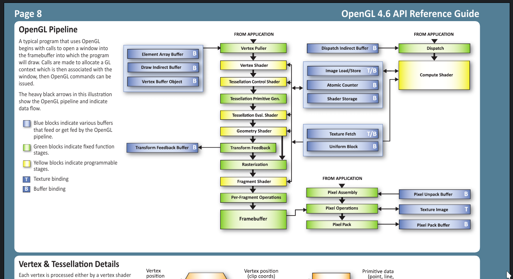
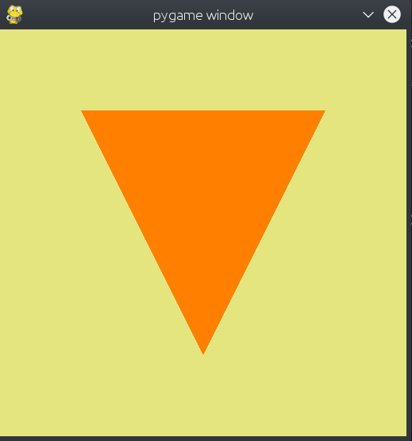
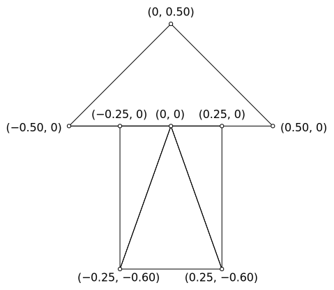
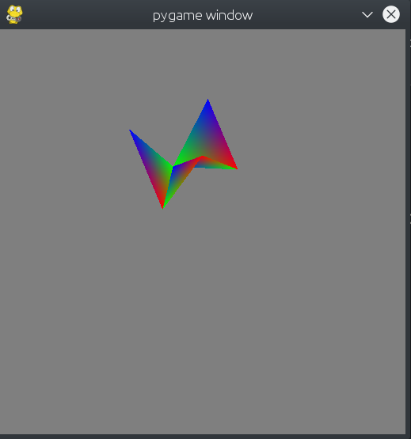
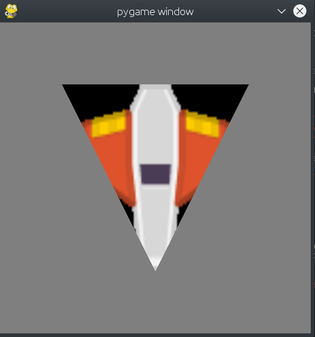

Comme illustré dans
gl_brick
et
gl_brick_shaders,
un jeu purement 2D peut être affiché en 3D, comme ce casse brique.
La seule chose qui changera est la partie dessin, la logique restera la même.
Pour comparer la version 2D et la version 3D, regardez le code
gl_brick_2d.
On fait de la 3D grâce à OpenGL.
Attention, le code gl_brick utilise de la vieille 3D (années 2000).
On parle d'OpenGL version 2 ou de fixed pipeline ou mode immédiat ou opengl sans shaders.
Cependant, OpenGL 2 est très utile pour comprendre les bases de la 3D et les matrices
ou pour avoir vite fait un affichage mais nous ne la verrons pas dans ce cours.
Il est vivement conseillé d'apprendre les shaders (OpenGL 3 et 4) dès le début de votre apprentissage OpenGL
pour pouvoir faire de puissants effets modernes.
Un projet fini avec des shaders ressemble à gl_brick_shaders mais nous verrons pas à pas les concepts dans quelques petits codes plus simples.
Il existe aussi des moteurs de jeux (game engines) qui nous simplifie la vie, comme Unity ou Unreal Engine
mais nous ne les verrons pas dans ce cours.
Avec OpenGL nous sommes plus près de la machine, nous sommes plus bas niveau
et donc on comprends mieux comment les choses marchent.
Si vous voulez, OpenGL est ce en quoi sont créés les moteurs de jeux.
Cependant ne vous inquiétez pas, OpenGL est raisonnablement facile à apprendre.
Je vais traduire en français
ce tutoriel (learnopengl.com) qui est un très bon tutoriel OpenGL.
Cependant il s'addresse à des utilisateurs plus avancés et de plus il est en C++.
Pour les concepts de base, je vous guiderez avec une liste de codes, pour les intéressés voici un tutoriel
en java par ThinMatrix.
L'avantage est que les fonctions ont le même nom en C++ ou Java ou Python,
en effet la bibliothèque OpenGL est une bibliothèque C qui a beaucoup de wrapper
dans des languages plus simples (plus haut niveau) comme Python ou Java.
Les fonctions et les concepts OpenGL sont documentés sur
le wiki OpenGL.
Tutoriel
Installation et prérequis
Nous allons continuer à utiliser pygame auquel nous allons rajouter
la bibliothèque OpenGL pour travailler en 3D.
Allez sur la page d'installation pour l'installer chez vous.
Tous les codes font un import vec3_utils donc vous devez
télécharger vec3_utils
et le mettre à côté de votre fichier .py.
Vous pouvez également télécharger gl_3d_basics.zip qui contient tous les fichiers nécessaires de ce chapitre.
Ce dossier est également présent sur les ordis de l'école dans le dossier réseau du parascolaire, je vous invite à le copier dans votre propre dossier.
Remarquez qu'on n'a plus besoin de faire ecran = car on ne manipulera plus l'écran directement.
Les couleurs en OpenGL sont de 0 à 1
(voir explications ici),
une couleur qui était par exemple de [255, 153, 0] sera maintenant de [255/255, 153/255, 0/255] et donc [1, 0.6, 0].
L'équivalent OpenGL du ecran.fill est :
glClearColor(0.9, 0.9, 0.5, 1.0) # du jaune, 1.0 est la transparence
glClear(GL_COLOR_BUFFER_BIT)
Remarquez que vu qu'OpenGL est une grande machine à état, si vous faites glClearColor au début, il s'en souviendra jusqu'à ce qu'elle change.
Vu que nous faisons un rendu OpenGL, vous devez enlever les appels pygame.draw.
Si vous lancez votre code vous devriez avoir un écran jaune.
La partie dessin sera un ensemble de shader program,
chaque shader program contient au moins 2 shaders,
le vertex shader,
et le fragment shader.
Un shader c'est un petit fichier de code, codé en langage GLSL, il sera exécuté en parallèle sur la carte graphique !
Chaque shader program peut dessiner (render) un ou plusieurs
VAO, chaque VAO trouve ses données dans un VBO.
Un VBO est simplement une liste de nombre,
un VAO dit comment sont structurés ces nombres.
[Durée 1:10] [Sous-titres bientôt] ThinMatrix explaining VAO and VBO.
La partie dessin sera donc une série de sélectionner un shader program, sélectionner le VAO, dessiner.
glUseProgram(shader_program)
glBindVertexArray(vertex_array_object)
glDrawArrays(GL_TRIANGLES, 0, 3) # on a 3 points, on commence au point numéro 0, faire des TRIANGLES.
glBindVertexArray(0)
glUseProgram(0)
L'appel à glDrawArrays est expliqué comme ceci :
On a 3 points à dessiner.
On commence au point numéro 0.
On fait un triangle tous les 3 points.
Vous devriez avoir deux erreurs en insérant ce code, shader_program et vertex_array_object n'étant pas défini.
Mais d'où viennent ces points ? Ils viennent du VBO et passent par le VAO !
Au début du code, on va créer un VBO qui contient les positions 2D de nos 3 points.
Ici, on est dans le repère de base de OpenGL, le NDC (Normalized Device Coordinates).
Le point en bas à gauche est (-1, -1).
Le point en haut à droite est (+1, +1).
Le centre de l'écran sera donc (0, 0),
l'axe x part vers la droite,
l'axe y part vers le haut,
l'axe z rentre dans l'écran et part de l'autre côté de votre écran.
On a donc trois points dont les XY valent (0.6, 0.6), (−0.6, 0.6) et (0, −0.6). La coordonnée en Z sera de 0 (on la changera plus tard), et la dernière coordonnée (appelée W) sera toujours de 1.
Pour en savoir plus sur W, voir la page de math (translation).
Bien quand dans le future nous utiliserons plutôt un repère main droite (dextrogyre),
le repère de base OpenGL est main gauche (lévogyre).
Quand nous serons vraiment en 3D, nous utiliserons la convention dextrogyre de Z vers le haut.
D'autres personnes (comme ThinMatrix) utilise la convention Y vers le haut.
La carte graphique veut un farray, il faut donc faire la conversion.
Un farray est un cas particulier de numpy.array
donc vous pourriez faire des opérations comme farray((1,2)) + farray((3,4)) ou 3 * farray((1,2)).
Le f veut dire que la liste contient des nombres à virgule flottante sur 32 bits
(voir définition de farray dans vec3_utils), c'est ce que la carte graphique veut.
vec3_utils contient également des raccourcis pour dire farray((x,y,z)), on peut faire vec3(x,y,z),
il y a aussi vec2(x,y) et des fonctions pratiques pour faire des conversions.
Vu que farray est dans vec3_utils, faites bien attention d'avoir écrit
import vec3_utils, d'avoir téléchargé
vec3_utils
et de l'avoir mis à côté de votre fichier .py.
Pour pouvoir écrire farray et non vec3_utils.farray, lisez le fichier progra_import.
On a définit des points en RAM, il est temps de les mettre dans un VBO de la carte graphique !
Toujours au début du code, on va donc créer un VBO.
vertex_buffer = glGenBuffers(1)
On veut un seul buffer, sinon on aurait pu faire a,b,c = glGenBuffers(3) par exemple.
On dit à OpenGL qu'on va le manipuler donc on le bind, à la fin on le détachera avec unbind, parfois j'aime dire qu'on le sélectionne et puis qu'on le désélectionne.
D'où vient ce 48 ? C'est le nombre d'octets (bytes) qu'on envoie.
Vu qu'on est dans un farray, chaque nombre fait 4 octets,
ce qui nous fait donc 48 octets qu'on envoie.
Cependant on pourrait aussi faire ceci pour ne pas devoir calculer le nombre d'octets :
Finalement, le GL_STATIC_DRAW est un indice donné à la carte graphique disant que ces données ne changeront jamais, mais peu de drivers lit cet indice il paraît.
Les données, les 48 bytes, sont dans la carte graphique, on doit maintenant donner plus d'infos, ce ne sont pas des bytes, ce sont des coordonnées pardi ! Direction VAO !
On crée un VAO, et on spécifie le type de données :
Et puis on informe du type de donnée, attention le VBO doit être binded.
glEnableVertexAttribArray(0) # on active l'attribut 0
glVertexAttribPointer(0, 4, GL_FLOAT, False, 0, ctypes.c_void_p(0)) # données par groupe de 4 Float dans l'attribut 0
Un VAO peut stocker plusieurs infos (des attributs),
ici on a juste une info à donner, donc on indique dans la première info, on indique donc 0, qu'on active via enable.
On a des coordonnées xyzw, et chaque nombre est un GL_FLOAT vu qu'on avait un farray.
Ça fait donc 4 GL_FLOAT.
Le dernier 0 est le paramète de décalage (stride), on ne l'utilise pas.
Le c_void_p(0) est un paramète que nous n'utilisons pas non plus.
On a stocké une liste de xyzw dans la carte graphique, c'est parti pour les shaders !
Le vertex shader est appelé une fois par point (vertex au singulier, vertices au pluriel).
Le vertex shader...
[input] Lit les attributs du point.
[output] Calcule la position finale du point, gl_Position.
Ici, on n'a rien à faire, on lit l'attribut envoyé, et on l'écrit dans gl_Position.
#version 330
// vertex shader
in vec4 position; // on lit le xyzw
void main()
{
gl_Position = position; // et on l'écrit
}
Il peut également calculer d'autres infos qui seront passées au fragment shader, ces valeurs seront interpolées, on verra ça plus tard.
OpenGL a assemblé nos trois points, et crée un triangle, le frament shader sera appelé une fois par pixel de ce triangle.
Le fragment shader...
[input] Lit les infos calculées dans le vertex shader (les out du vertex shader).
[output] Calcule la couleur finale du pixel dans sa variable out.
Ici, on va juste dire que le pixel est orange, à 100% de transparence.
#version 330
// fragment shader
out vec4 pixel; // notre but est de donner la couleur du pixel
void main()
{
pixel = vec4(1, 0.5, 0, 1); # orange, transparence 100%
}
N'essayez pas de juste changer la valeur de la transparence, il faut activer d'autres choses pour ça.
Finalement, il faut que l'attribut dans le VAO correspond à l'attribut 0 dans le shader, soit on l'indique dans le vertex shader via location :
// vertex shader
layout (location = 0) in vec4 position; // on lit le xyzw
Ou bien on peut utiliser glGetAttribLocation dans le code python pour savoir le numéro qui a été assigné automatiquement :
position = glGetAttribLocation(shader, 'position')
glEnableVertexAttribArray(position) # on active l'attribut position
glVertexAttribPointer(position, 4, GL_FLOAT, False, 0, ctypes.c_void_p(0)) # données par groupe de 4 Float dans l'attribut position
Attention, parfois cet attribut est supprimé quand il n'est pas utilisé, et glGetAttribLocation renvoie -1
position = glGetAttribLocation(shader, 'position')
if position != -1:
glEnableVertexAttribArray(position) # on active l'attribut position
glVertexAttribPointer(position, 4, GL_FLOAT, False, 0, ctypes.c_void_p(0)) # données par groupe de 4 Float dans l'attribut position
else:
print('inactive attribute "{}"'.format('position'))
La suite d'opération vertex shader, fragment shader est appelé le pipeline graphique.
Il est fait en parallèle sur la carte graphique, si on a 30 points et 30 unités sur la carte graphique, alors ça prendra autant de temps d'avoir 1 point que 30.
Le vertex shader sera appelé en parallèle pour les 30 points en même temps.
On peut rajouter plein d'étapes sur le pipeline, le vertex shader et fragment shader étant le minimum.
Le pipeline graphique, on y voit le vertex shader et le fragment shader.

Le pipeline graphique complet en OpenGL 4, il y a plein d'autres étapes modifiables ! Cliquez pour voir en grand.
La vidéo de ThinMatrix explique assez bien:
Un petit mot sur l'interpolation.
Le vertex shader est appelé une fois par point.
Le fragment shader est appelé une fois par pixel.
Le vertex shader peut envoyé des infos au fragment shader en plus de la position.
Le fragment shader peut recevoir des infos du vertex shader pour calculer une couleur.
Mais comment on passe d'une info par point à une info par pixel ?
Si par exemple, le point 1 envoie l'info 1, le point 2 envoie l'info 2 et le point 3 envoie l'info 3,
quelle info va recevoir le pixel ?
ThinMatrix invente des attributs fictifs catFactor et dogDistance qui servent à calculer la couleur de chaque pixel.
Et bien, ça dépendra de sa distance 3D par rapport aux points,
au plus le pixel est proche du point, au plus il prendra sa valeur.
Ainsi un pixel proche du point 1 recevra l'info 1.
Un pixel à égale distance des points 1, 2 et 3 recevra valeur ⅓ 1 + ⅓ 2 + ⅓ 3 = 2.
Le pixel au milieu des points 1 et 2 recevra la valeur ½ 1 + ½ 2 = 1.5.
Le premier exercice fera ça pour les couleurs et on obtiendra ceci !
Le code de base pour ce niveau se trouve dans
gl_shaders,
une version structurée avec des fonctions est disponible dans
gl_shaders_with_functions.

Un incroyable triangle qui a subit le pipeline OpenGL.
Ces exercices peuvent être fait dans n'importe quel ordre.
Création d'une flèche et non un triangle, il faudra bien entendu rajouter des points dans la liste vertices, mais il faut également changer d'autres valeurs, lesquelles ?

Une flèche composée de 4 triangles.
Interpolation de couleur, vous devez rajoutez un autre attribut par vertex : vec3 couleur, il faudra donc refaire :
N'oubliez pas de glGenBuffers pour avoir de la place sur la carte graphique,
glBufferData pour y mettre des données,
glEnableVertexAttribArray pour que les données soient envoyées,
glVertexAttribPointer pour que le shader comprennent que nous envoyons 3 floats.
Ensuite il faut faire le code dans les shaders :
Le vertex shader va simplement prendre la in vec3 couleur et l'envoyer sous le nom out fcouleur, j'ai choisi le nom fcouleur pour couleur envoyée dans le fragment shader.
Le fragment shader va simplement prendre le in vec3 fcouleur et l'envoyer dans le out vec4 pixel,
vous pouvez utiliser vec4(fcouleur, 1) pour copier les 3 composantes r,g,b et mettre la 4ème composante (alpha) à 1.
Compréhension de la composante z, que se passe-t-il quand on la met à -1, 1, 2 ou -3 ?
Ajout d'une uniform de translation pour dessiner plusieurs flèches.
Une uniform est simplement une valeur qui va être passée du python au shader, sans modification, une constante.
Le nom uniform vient du fait que la valeur sera la même pour tous les points et tous les pixels.
Dans le vertex_shader ajoutez uniform vec3 translation.
La position calculée par le vertex_shader sera maintenant position + translation.
Au début du code ou dans la partie Tick, envoyez la translation au shader via le code python :
Animation de la translation, vous pouvez faire en sorte que l'objet bouge via le clavier ou se déplace en fonction du temps.
La composante z comme profondeur.
Dessiner deux flèches de couleur différentes qui se croise avec deux z différents, laquelle des deux voyez vous ?
Inversez l'ordre de dessin des deux flèches, voyez vous une différence ?
Au début du code activez le Depth Test via glEnable(GL_DEPTH_TEST),
à chaque frame faites maintenant glClear(GL_COLOR_BUFFER_BIT | GL_DEPTH_BUFFER_BIT)
à la place de glClear(GL_COLOR_BUFFER_BIT)
et recommencez les deux expériences précédentes, que voyez-vous ?
Ajout d'une uniform de scale pour dessiner plusieurs flèches de taille différentes (une deux fois plus grande et une trois fois plus petite).
On aura uniform float scale.
Et on enverra via glUniform1f(loc, 0.5).
Ajout d'une uniform de rotation pour dessiner plusieurs flèches tournées, la formule est plus difficile que pour la translation ou l'agrandissement n'est ce pas ?
Dans le chapitre suivant on utilisera des matrices pour facilement gérer cela.
Quelle formule dois-je adapter si je veux faire un truc et un agrandissement ?
On verra dans le chapitre suivant que les matrices généraliseront les séquences de transformation,
toutes les transformations seront dans une seule matrice appelée la matrice Modèle.
Matrices de transformation.
Nous allons maintenant détailler le calcul de la position d'un point 3D vers un point 2D.
Voici une très belle image qui résume les opérations et le résultat du code que nous ferons.
Comment convertir un point 2D en 3D — Cliquez pour agrandir.

Mon magnifique oiseau 3D en perspective coloré avec un gradient (ou 3 triangles avec interpolation de couleur qui ont subit des matrices de transformation).
Veuillez lire la page math pour être à l'aise avec le concept de vecteur et de matrices.
Je ferai une vidéo qui explique les matrices de projection et de caméra (LookAt).

Mon magnifique oiseau 3D en perspective coloré avec un gradient (ou 3 triangles avec interpolation de couleur qui ont subit des matrices de transformation).
 {{English here!|Français ici !}}
{{English here!|Français ici !}}


{kind=link}
{kind=link}
{kind=link}